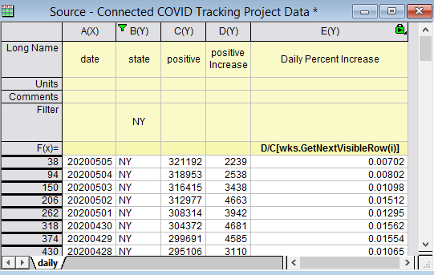

Letztes Update: 17.06.2020
Anwender fragen, wie sie den Zeilenindex und den Wert der sichtbaren Zelle nach Filtern der Daten in Origin erhalten. Sehen Sie beispielsweise das Bild unten. 
wks.GetNextVisibleRow(N) ist eine Arbeitsblatteigenschaft, die Origin 2016 hinzugefügt wurde, um den nächsten sichtbaren Zeilenindex ab der gegebenen Zeile N auszugeben.
wks.GetNextVisibleRow(0)= gibt zum Beispiel den ersten sichtbaren Zeilenindex 38 aus.
col(Name)[wks.GetNextVisibleRow(N)] bezieht sich auf den nächsten sichtbaren Wert in der festgelegten Spalte nach der N-ten Zeile. Verwenden Sie z. B. wie im Bild oben D/C[wks.GetNextVisibleRow(i)] in der Spaltenformel, um den Wert von Spalte D durch den C-Wert in der nächsten sichtbaren Zeilen zu teilen und auf diese Weise den täglichen Prozentanstieg der positiven Fällen im Staat New York zu ermitteln. In älteren Versionen können Anwender col(D)/col(C)[wks.GetNextVisibleRow(i)] verwenden.
Hinweis:
Schlüsselwörter:Filter, Zeilenindex, sichtbare Zeile